XR-ready BIM Systems
Automation scripts and validators that convert BIM/CAD inputs into performant XR assets without sacrificing metadata fidelity.

Spatial Technology Company
LXIR Technology engineers the toolchains that make immersive content repeatable—from BIM ingestion to real-time delivery. We build custom software, optimize data, and produce experiences that scale.
Since 2023, LXIR Technology has been building proprietary frameworks that connect CAD/BIM sources to XR viewers, accelerating the path from raw data to believable twins. We blend software development with technical art to make immersive experiences reproducible.
Our products cover pipeline automation, immersive storytelling platforms, and visualization systems that deliver measurable outcomes.
Automation scripts and validators that convert BIM/CAD inputs into performant XR assets without sacrificing metadata fidelity.
Custom tour engines with analytics, branching narratives, and CMS hooks so stakeholders experience every decision within context.
Real-time render pipelines fed directly from the same source of truth, ensuring stills and motion match what ships in XR.
Tell us about your project, your timeline, and how you prefer to engage. We are flexible with NDAs and can embed with your design or construction teams.